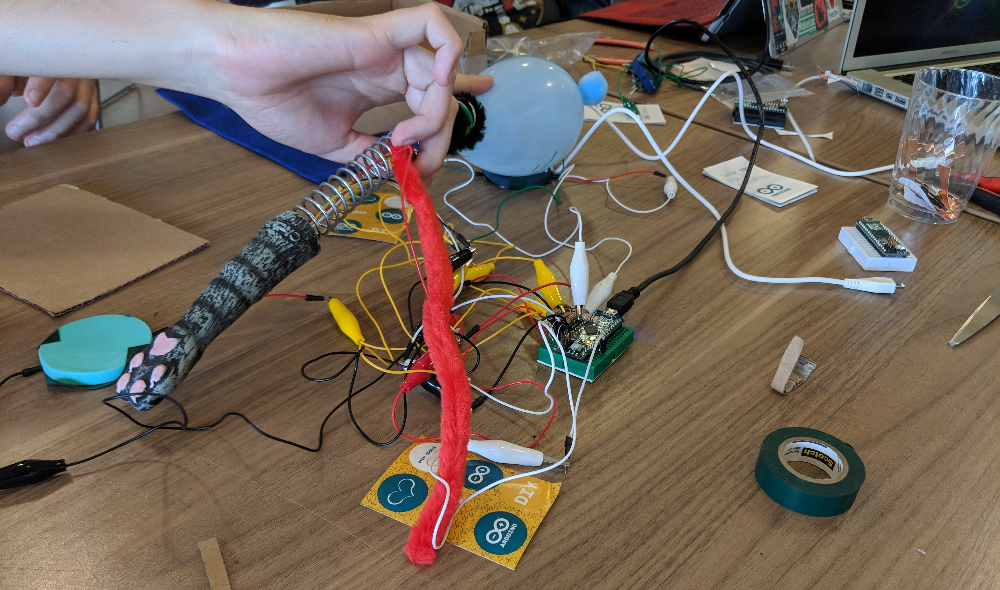
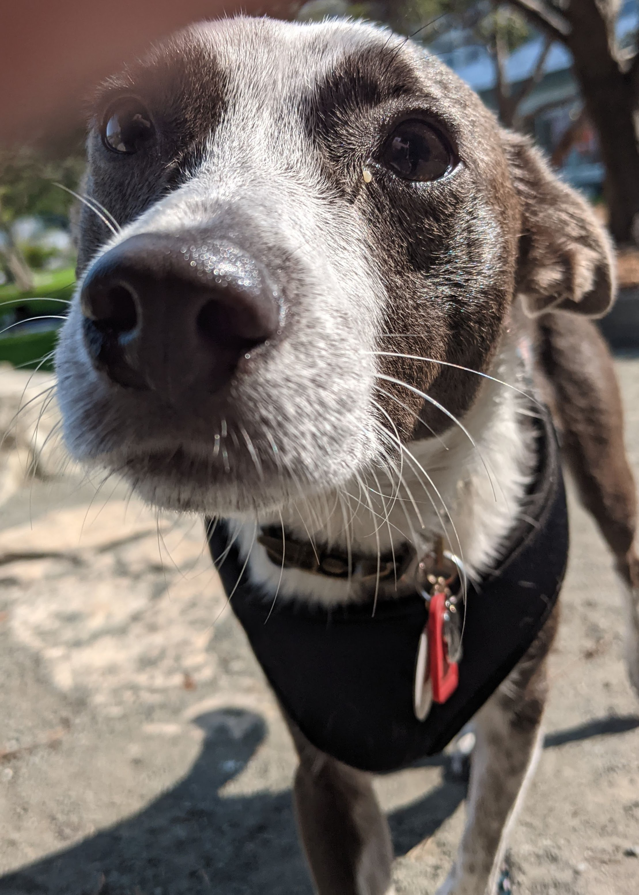

Acedamic work at UC Santa Cruz 2009-2021
I got my start at UC Santa Cruz in 2009 working on my BS in Bioengineering with a focus on developing Assistive Technology to help disadvantaged communities and further universal access in technology. I started working with Dr. Sri Kurniawan and Dr. Mircea Teodorescu on developing a robot that would be able to help older people safely stay in their homes for longer by using camera vision and machine learning to do wellness checks and distanced heart rate analysis. This initial interest in research encouraged me to return to UCSC for graduate school in 2014.
I continued working with Professor Kurniawan interviewing physical therapist and stroke reahablitation experts in an attempt to develop technology for rapid recovery of motor skills after stroke, but shifted my focus as the new department of Computational Media formed around me and an influx of new professors led me to collaborate with Dr. Katherine Isbister.
Her focus on Research through Design and tactile fidgeting objects helped form my next project. I worked with Makers, designers and explored smart material like e-textiles, sensors and microcontrollers to create deformable controllers for emotion detection and regulation in children (Worry Pet) and ADHD regulation (Fidget Ball). My work process is holistic from idea formation to execution to user testing and refinement it always takes many iterations to get to the "end" product. All of my product stages involved an interdisciplinary team and I love to make new connections with entusastic developers.
As a less formal application of my experience and a way to explore new spaces I organized a workshop with the Games and Playable Media department on developing deformable controllers. Over an 8 hour period participants developed their own alterative controllers interfaces and games to play with them. Example shown to the right.

Throughout the life of my projects I worked as the programmer, hardware developer, project manager and user testing lead on the various projects I developed. As both of my research projects were research platforms for interaction data collection, they both created very data rich logs. I helped facilitate and document consistant procedures for data collection, annotated the logs with interview transcripts and helped initial interpretation so that the machine learning team was able to parse through the data for model training.

I've been pleased to work with exterior collaborators and as a result the emotional regulation device developed into a commercial product which was featured in Time Magizine's Best Inventions of 2021, the Sproutel Purrble. My other project the Fidget Ball was used as the foundation of an NIH R21 grant studying attention attinuation, which is ongoing at UC Davis. I finished my Ph.D. in the summer of 2021 and I'm in the process of making the transision to industry with a focus on UX Research.
Dogs and Other Interests
Outside of research I love spending time with dogs and spent a lot of my spare time during grad school working with WoofPack831, a pack walking group that helps train dogs in well-mannered interactions with other dogs. This love of dogs led to an intership with Companion Labs in 2020 right at the beginning of the pandemic helping user testing and fund raise for their ML backed training device to help keep dogs entertained and trained while stuck at home.
I grew up moving internationally so I'm very much a third culture kid but the Bay Area has definetly felt like home for the last decade, so when I finished my degree in 2021, I moved to San Francsisco proper and adopted my new favorite doggo, Kirby, an aussie shepard mix that joins me on adventures through the city! Outside of work I have a passion for musical theater, craft cocktails, gardening, board and video games, puzzle hunts and escape rooms.